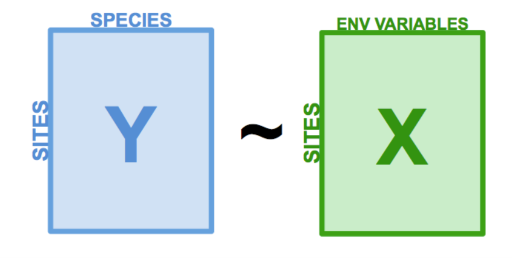

Ordination Lab
Kierstin Acuna & Martin Genova
2023-12-04
You can load up the lab script here
Lecture Review
In last week’s lecture, we covered the basics of ordination. We reviewed a bit of matrix algebra, learned to compute the most common distance metrics (Euclidean and Bray-Curtis), and covered unconstrained and constrained ordination techniques.
As a reminder, unconstrained ordination methods do not require any prior knowledge or assumptions about the data, and they are primarily used for visualization. These methods include PCA, PCoA, CA, and NMDS.
In contrast, constrained ordination methods do require prior knowledge and/or assumptions about the data. Constrained ordination methods combine concepts from ordination and regression to test hypotheses. These methods include RDA and CCA.
What do we mean by prior knowledge or assumptions about the data? Typically in constrained ordination, we are trying to identify the relationships between a matrix of response variables and a matrix of predictor variables. We partition the variation within the response variables into two parts: the part that can be explained by predictor variables, and the part that cannot be explained by predictor variables. The variation from the response variables that can be explained by the predictor variables is used to create our constrained ordination axes. These axes are constrained by the response variables.
RDA Review
The basic steps of redundancy analysis (RDA) are:
- Regress each response variable in y over the predictor variables in
x
 - Perform a PCA on the model predictions

Of course, the actual RDA function from the vegan package is a bit more sophisticated than this. It involves QR decomposition and some complex matrix algebra. But, today we will focus on using RDA, rather than getting into the weeds with matrix math.
Doubs Fish Data
For this example, we will be using the Doubs fish data (Verneaux, 1973). It contains 3 datasets. Doubs.fish is a dataset containing counts of 27 species observed across 30 sites in the Doubs river in France. Doubs.env and Doubs.geo are datasets containing attributes on each site, such as longitude and latitude, slope, pH, and dissolved oxygen concentration.
# Load libraries ----
library(codep)## Warning: package 'codep' was built under R version 4.3.2library(vegan)
# Load Doubs fish Data ----
data(Doubs)
species <- as.data.frame(Doubs.fish[-8,])
vars <- as.data.frame(cbind(Doubs.env[-8,],Doubs.geo[-8,]))Let’s take a closer look at the data, starting with the distribution of abundance values we find.
## Explore the data ----
# Count the number of species frequencies in each abundance class
ab <- table(unlist(species))
# Plot distribution of species frequencies
barplot(ab, xlab = "Abundance class", ylab = "Frequency", col = grey(5:0/5))
That’s a lot of zeros!
We can also look at the spread of our predictor variables. The help page for the Doubs data gives explanations of what the variables mean.
# Look at the spread of the predictor variables
# ?Doubs
summary(vars)## slo flo pH har
## Min. : 0.200 Min. : 0.84 Min. :7.700 Min. : 40.00
## 1st Qu.: 0.500 1st Qu.: 4.80 1st Qu.:7.900 1st Qu.: 84.00
## Median : 1.200 Median :23.00 Median :8.000 Median : 88.00
## Mean : 3.531 Mean :22.92 Mean :8.048 Mean : 85.83
## 3rd Qu.: 3.000 3rd Qu.:28.80 3rd Qu.:8.100 3rd Qu.: 97.00
## Max. :48.000 Max. :69.00 Max. :8.600 Max. :110.00
## pho nit amm oxy
## Min. :0.01 Min. :0.150 Min. :0.0000 Min. : 4.100
## 1st Qu.:0.10 1st Qu.:0.520 1st Qu.:0.0000 1st Qu.: 8.100
## Median :0.30 Median :1.600 Median :0.1000 Median :10.200
## Mean :0.57 Mean :1.697 Mean :0.2124 Mean : 9.472
## 3rd Qu.:0.58 3rd Qu.:2.500 3rd Qu.:0.2000 3rd Qu.:11.000
## Max. :4.22 Max. :6.200 Max. :1.8000 Max. :12.400
## bdo Lon Lat DFS
## Min. : 1.300 Min. :5.083 Min. :46.71 Min. : 0.3
## 1st Qu.: 2.700 1st Qu.:6.124 1st Qu.:46.90 1st Qu.: 70.5
## Median : 4.100 Median :6.338 Median :47.20 Median :185.9
## Mean : 5.014 Mean :6.359 Mean :47.13 Mean :193.0
## 3rd Qu.: 5.200 3rd Qu.:6.791 3rd Qu.:47.33 3rd Qu.:304.3
## Max. :16.700 Max. :7.168 Max. :47.48 Max. :453.0
## Alt
## Min. :172.0
## 1st Qu.:246.0
## Median :375.0
## Mean :470.9
## 3rd Qu.:752.0
## Max. :934.0
The predictor variables are all in different units, and are on very different scales!
Exercise 1
Before we can perform an RDA, we need to center and scale the predictor variables, as well as account for the double-zero problem. In the previous lecture, we talked about how we can use different distance metrics, such as the Bray-Curtis dissimilarity to account for the double-zero problem. Since we are using the canned RDA function, we don’t have the option to use the Bray-Curtis dissimilarity. The RDA function uses the euclidean distance metric. Therefore, we need to fix the double-zero problem before we feed the data into the RDA function.
We can use the hellinger-transformation to account for the
double-zero problem. The hellinger transformation takes raw abundance
values, and transforms them into the square root of the relative
abundance. The formula for the hellinger transformation is:
where j represents species and i represents sites (yij represents species j in site i). yi. represents the summed abundance of all species in site i.
Write a function called RDA_prep() that uses the hellinger transformation and the scale function to prepare the data for RDA. This function should be specified as follows:
Input:
- x = a dataframe containing the predictor variables
- y = a dataframe containing the response variables
Suggested Algorithm:
- Using the hellinger formula and a for loop, hellinger-transform the
y dataframe. (Hint: convert y to a matrix first).
- Use the scale function to center and scale the x dataframe
Return:
- out = a list containing x (the centered and scaled x dataframe) and y (the hellinger-transformed y dataframe)
You can use the following code to check your answer:
decostand(species, "hellinger")After you’ve made your function, use it to prepare the Doubs fish data for RDA!
Exercise 2
Now that our data is ready, let’s practice using RDA for variable selection! In real life when we are creating models for inference, we should always select variables based on ecological reasoning. But since none of us work on fish in the Doubs river, and we’re just trying to get some practice using these functions, we’re just going to throw all the data we have at this model!
The ordiR2step() function from the vegan package can help us with variable selection. The concept is similar to the MuMIn::dredge() function. Essentially, it takes a null model and a global model, and then adds predictor variables from the global model to the null model stepwise. If a predictor variable increases the adjusted-R2 value, it keeps it. This works because the adjusted-R2 value calculation contains a penalty for the number of parameters fit, meaning that adding more parameters does not always increase the adjusted-R2.
The two main arguments we need to specify for the ordiR2step() function are object and scope. Object is the null model we want to add to, and scope is the fully specified model we want to pull predictor variables from.
For this exercise, use the rda() function to create null and global models. Then, use the ordiR2step function to choose the best predictor variables. In your word document, answer the following questions:
- What variables did ordiR2step select?
- Can you think of a scenario where it would be appropriate to use ordiR2step (or dredge) for variable selection?
Exercise 3
So far, we’ve scaled and transformed our data, and used a variable selection tool to narrow down our predictor variables. Say we want to test the hypothesis that our selected predictor variables are impacting the fish community in the Doubs river. There are functions that allow us to obtain R2 and p-values from an RDA!
The RsquareAdj() function extracts the percent of the variation in the response matrix (Doubs fish community) explained by the predictor matrix (environmental variables). This is also called the constrained variance. Then, it adjusts the constrained variance for the number of predictor variables used in the model to obtain the adjusted-R2 value.
The anova.cca() function allows us to test the significance of the predictor variables used in our RDA by implementing an ANOVA-like permutation test. Essentially, if the argument ‘by = “terms”’ is specified, the function will sequentially assess if adding each predictor variable makes a significant difference in the amount of variation explained compared to a null model. It’s important to note that the order of terms will affect their significance, as they are assessed sequentially from first to last.
In this last exercise, we will run an RDA on our selected variables, plot the output, and assess its R2 value and significance. After completing these tasks, answer the following questions in your word document:
- What values did you get for the adjusted-R2 and
p-values?
- Are there any conclusions you can draw from your RDA plot?